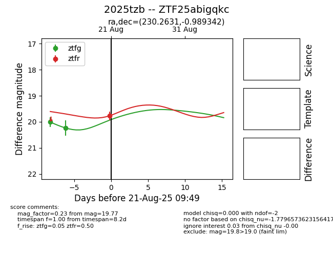

Target 2025tzb at 2025-08-21 09:49, see:
FINK: fink-portal.org/ZTF25abigqkc
Lasair: lasair-ztf.lsst.ac.uk/objects/ZTF25abigqkc
ALeRCE: alerce.online/object/ZTF25abigqkc
TNS: wis-tns.org/object/2025tzb
YSE: ziggy.ucolick.org/yse/transient_detail/2025tzb
alt names
ZTF25abigqkc (ztf,alerce)
2025tzb (tns,yse)
coordinates:
equatorial (ra, dec) = (230.2631,-0.98934)
galactic (l, b) = (1.0658,+44.34737)
photometry
last ztfg=20.23, ztfr=19.77
2 ztfg, 1 ztfr detections
